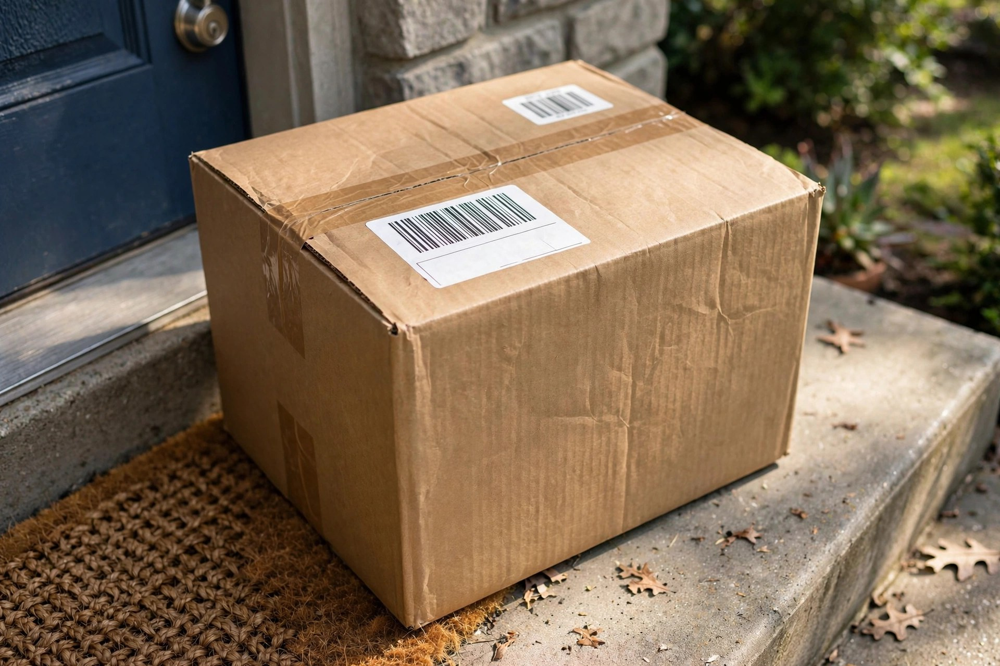
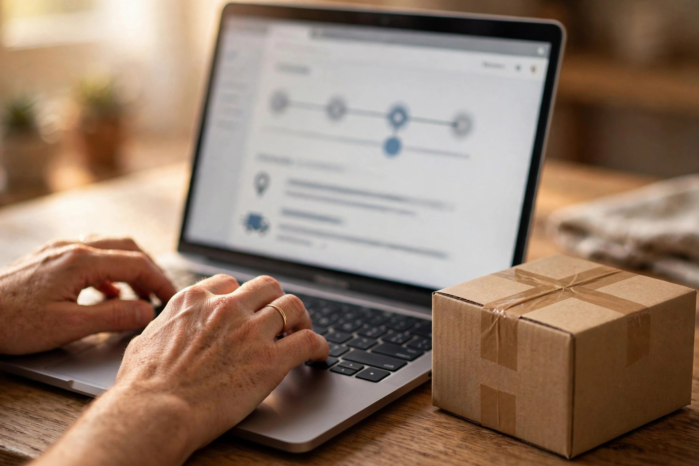

Cotizar un envío no es solo escribir un código postal y aceptar el primer precio que aparece. El costo final depende del peso real o volumétrico, de la zona de destino y del servicio que elijas, y un dato mal capturado puede cambiar la tarifa cuando el paquete ya está en camino. Esta guía te ayuda a cotizar bien desde el primer intento.

Necesitas cuatro cosas: código postal de origen y de destino, peso del paquete ya embalado, sus medidas (largo, ancho y alto) y el tipo de contenido. Pesa el paquete con todo y caja, porque el peso que cuenta es el del envío terminado, no el del producto solo. Si no tienes báscula, muchas sucursales pesan el paquete al momento de documentarlo, pero cotizar con un peso aproximado te da una referencia útil antes de salir de casa.
Las paqueterías cobran por el mayor entre el peso real y el peso volumétrico, que se calcula a partir del tamaño de la caja. Una caja grande y ligera — por ejemplo, unos tenis en su caja original dentro de otra caja — puede costar más de lo que su peso sugiere. Para evitarlo, usa la caja más ajustada posible sin comprometer la protección del contenido, y rellena los huecos con material ligero en lugar de papel pesado.
El servicio más barato no siempre es el mejor negocio: revisa el tiempo estimado de entrega y si incluye rastreo en línea. Una vez que tu guía esté generada, puedes rastrear tu envío de Paquetexpress con el número de guía para ver su avance real, en lugar de depender solo de la fecha estimada que te dieron al cotizar. Si el envío es urgente, cotiza también el servicio exprés y compara la diferencia: a veces son pocos pesos por un día menos de espera.

Antes de pagar, confirma que el destino tenga cobertura para el servicio cotizado y dónde entregarás o recogerán el paquete. Puedes consultar las sucursales de Paquetexpress para ubicar la más cercana y sus horarios, sobre todo si planeas dejar el paquete en mostrador. Llevarlo ya embalado y etiquetado agiliza la documentación y evita cargos por reempaque en sucursal.
Verifica que el remitente y el destinatario estén escritos correctamente, que el código postal coincida con la dirección y que el valor declarado sea el real: un valor declarado bajo puede limitar cualquier reclamación si el paquete se daña o se extravía. Guarda la guía y el comprobante de pago; con esos dos documentos puedes rastrear, aclarar y, si hace falta, facturar tu envío sin contratiempos.
Pesa y mide el paquete ya embalado, cotiza con esos datos reales, compara servicio y tiempo además del precio, confirma la sucursal y revisa los datos antes de pagar. Así la cotización que viste en pantalla será la que realmente pagues.
Guía preparada por paqueteriarastreo.com — guías de rastreo y facturación de paqueterías en México.